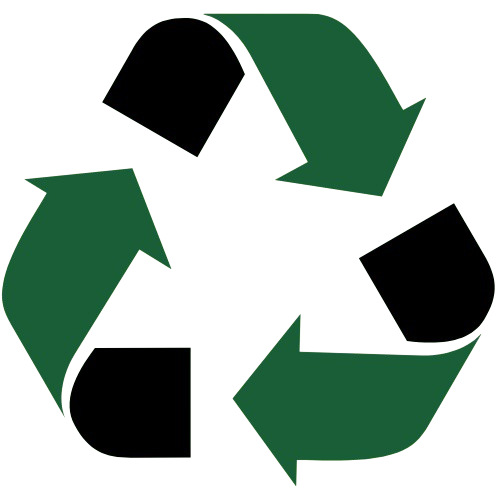

Reciclagem Inteligente
A plataforma Reciclagem Inteligente é um sistema que oferece um serviço de localização de ecopontos espalhados por são paulo
acessado através de uma interface web de mapa interativo.
As funcionalidades da plataforma se dividem em dois grupos principais: a Funcionalidade Central (localização dos ecopontos) e as
Funcionalidades de Suporte (Aplicação).
Clique abaixo para conhecer nosso projeto
Funcionalidade Central (Localização dos ecopontos)
Mapa interativoÉ a principal função. A Reciclagem Inteligente atua como
um mapa de localização/assistente de busca por ecopontos, permitindo que o usuário interaja com o mapa
e assim visualize os ecopontos localizados em toda São Paulo
Funcionalidades de Suporte (Aplicação)
Estas funções garantem a gestão da experiência do
usuário na plataforma:
Busca por proximidade Com apenas um clique voce pode ver todos os ecopontos em até 3 kilometros perto de você
Localização RealUsamos sua geolocalização para que o sistema possa fazer a busca da sua localização, para que você possa se localizar rapidamente
Busca por Nome/BairroTambém é possivel você mesmo buscar os ecopontos pelo nome ou pelo bairro garantindo assim multíplas opções de buscas, facilitando seu acesso